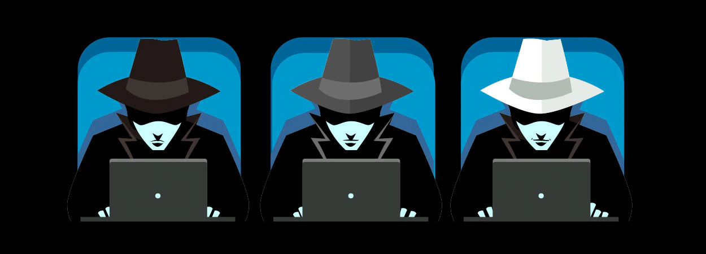

Types of Hackers

Black Hats
The term “black hat” originated from Western movies, where the bad guys wore black hats and the good guys wore white hats.
A black-hat hacker is an individual who attempts to gain unauthorized entry into a system or network to exploit them for malicious reasons.
The black-hat hacker does not have any permission or authority to compromise their targets. They try to inflict damage by compromising security systems,
altering functions of websites and networks, or shutting down systems. They often do so to steal or gain access to passwords, financial information,
and other personal data.
White Hats
White-hat hackers, on the other hand, are deemed to be the good guys, working with organizations to strengthen the security of a system.
A white hat has permission to engage the targets and to compromise them within the prescribed rules of engagement.
White-hat hackers are often referred to as ethical hackers. This individual specializes in ethical hacking tools, techniques, and
methodologies to secure an organization’s information systems.
Unlike black-hat hackers, ethical hackers exploit security networks and look for backdoors when they are legally permitted to do so.
White-hat hackers always disclose every vulnerability they find in the company’s security system so that it can be fixed before they
are being exploited by malicious actors.
Some Fortune 50 companies like Facebook, Microsoft, and Google also use white-hat hackers.
Grey Hats
Grey hats exploit networks and computer systems in the way that black hats do, but do so without any malicious intent, disclosing all
loopholes and vulnerabilities to law enforcement agencies or intelligence agencies.Usually, grey-hat hackers surf the net and hack into
computer systems to notify the administrator or the owner that their system/network contains one or more vulnerabilities that must be fixed
immediately. Grey hats may also extort the hacked, offering to correct the defect for a nominal fee.